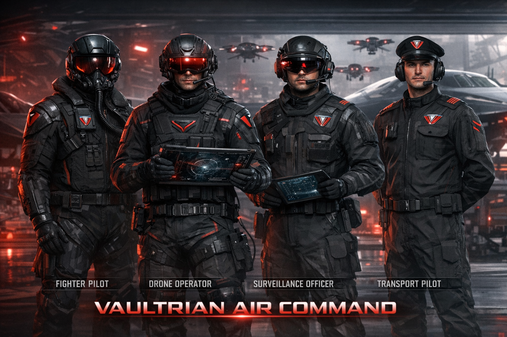

Defense & enforcement · Air & aerospace
VAULTRIA Air Command
A centralized air hierarchy built for VAULTRIA — not a generic rank chart. Tied to defense architecture, Aegis Prime / Vaultryn integration, and economy (CV / TV).
Operational roles overview

Motto
Control the sky. Control the response time.
Top command (strategic control)
Prime Custodian
Ultimate authority over Air Command — may order deployment and escalation under doctrine and override rules defined in Core Doctrine.
- May deploy air units on national emergency timelines
- Final human authority over lethal release when doctrine places it at executive level
Air Supreme Commander
Head of all air operations — reports to the Prime Custodian. Owns combat strategy, integrated air defense, and coordination with aerial AI systems (human-gated per rules of engagement).
High Air Council (3–5 members)
Senior specialists who do not outrank one another in role — they own verticals. Typical seats:
- Director of Combat Aviation Fighter pilots, air-to-air and strike packages.
- Director of Drone Warfare Unmanned systems, AI-assisted sorties under human release rules.
- Director of Surveillance Airspace Persistent monitoring, datalinks, airspace picture for Vaultryn and command.
- Director of Air Logistics Transport, airlift, sustainment, and tanker coordination.
Operational command (mission level)
- Air Fleet Commander Multiple squadrons — often aligned to Vault Zones or theaters.
- Squadron Commander Fighter, drone, surveillance, or transport squadron — owns readiness and tasking.
- Wing Leader Leads a flight or wing within the squadron; executes missions.
Tactical level (field operators)
Elite pilot / operator
- Fighter pilots — air combat.
- Drone operators — AI-assisted strikes where doctrine allows.
- Surveillance officers — aerial monitoring and sensor tasking.
- Transport pilots — troops, cargo, medevac.
Flight Officer
Junior pilots and operators — supervised missions, training pipeline.
Air technicians
Maintenance and integration for aircraft, drones, avionics, and ground systems.
Special divisions
Aerial AI Command Unit
Coordinates autonomous and semi-autonomous air assets; interfaces with Aegis Prime and national AI policy — recommends and routes; lethal effect remains human-gated where doctrine requires.
Sky Sentinel Unit
Elite rapid-response — first intercept, first defense; optimized for sub-minute alert-to-scramble where infrastructure supports it.
Chain of command flow
- Prime Custodian
- Air Supreme Commander
- High Air Council (functional)
- Air Fleet Commanders
- Squadron Commanders
- Wing Leaders
- Pilots / operators / technicians (by role)
How missions typically run
- Threat or anomaly detected (sensors, AI flag, human cue).
- Air Supreme Commander (or delegated authority) approves response tier.
- Drone or unmanned package often deploys first — fastest layer.
- Fighters or Sky Sentinel escalate if the situation demands.
- Surveillance maintains live picture; logistics supports recovery and sustainment.
Dual command (VAULTRIA model)
Human command holds the published chain above. AI suggestion from Vaultryn / Aegis provides prioritization, correlation, and early warning — not a parallel air force. Final decisions rest with humans at the level doctrine assigns; the Prime Custodian retains ultimate executive authority.
What sets it apart
- Integrated AI + human command, not bolt-on software.
- Drone-first response where rules allow — faster than manned-only doctrines.
- Short decision paths for national air defense — centralized, doctrine-clear.
Service benefits
Elite covenant — air & aerospace
You do not just serve. You operate at the highest level of human capability.
1. Compensation (VYR)
- Core Vyr (CV) — among the highest base compensation in VAULTRIA.
- Trust Vyr (TV) — mission success and sustained performance.
- Bonuses: hazard, rapid-response, AI efficiency where chartered.
2. Lifestyle & access
- Priority housing in high-security zones; premium healthcare where policy extends.
- Faster transport lanes and restricted-zone access by clearance.
- For eligible non-citizens: accelerated pathways where law allows.
3. Training & skills
- Elite flight and operator pipelines; AI system literacy; pressure decision-making.
- Skills that remain valuable inside or outside uniform under exit rules.
4. Technology
Advanced fighters, AI-assisted drones, real-time combat networks — among the most capable kit in the nation.
5. Status
Public narrative: protectors and symbols of technical sovereignty; merit-weighted promotion, not seniority alone.
6. Protection & family
- Priority emergency response for member and family under crisis protocols.
- Education and healthcare advantages for dependents where chartered.
7. Enhancement programs
Cognitive load training, stress protocols, and performance optimization — within medical and doctrine limits.
8. Post-service
Residual Trust Vyr advantage, zone access, advisory tracks in government or technical roles — where quotas exist.
Trade-offs (keeps it credible)
- High operational pressure and irregular tempo
- Monitoring and performance scrutiny
- Physical risk on contested missions
- Constrained personal freedom while on orders
Big idea: Air Command is framed as a class upgrade inside VAULTRIA — earned through skill and loyalty to the system, not celebrity.
Next design layers
- Rank badges and role insignia
- Uniform and kit differences (pilot, drone, surveillance, transport)
- Air base layout: hangars, towers, AI integration
- Recruitment pipeline and day-in-the-life canon